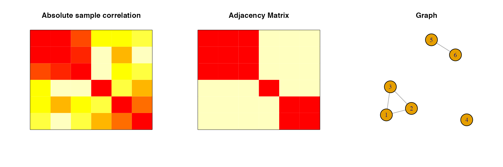

In this tutorial, we demonstrate how to use independencepvalue to test the independence of a group of variables with the remaining variables of a data set, where that group was obtained by thresholding the correlation matrix.
Introduction
Let \({\bf X}\sim N_{n\times p}(0,{\bf I}_n,{\boldsymbol\Sigma})\), and let \({\bf x}\) be a realization of \({\bf X}\). This package tests if a particular block of the covariance matrix is zero or not, i.e.
\[ H_0^{\mathcal P}:{\boldsymbol\Sigma}_{{\mathcal P},{\mathcal P}^c}={\bf 0}~~\text{versus}~~H_1^{\mathcal P}:{\boldsymbol\Sigma}_{{\mathcal P},{\mathcal P}^c}\neq{\bf 0}. \]
There are two main parts to this package:
P-values in the case of pre-specified groups: We compute the p-value under the classical context in which \({\mathcal P}\) is assumed to be pre-specified (i.e., not selected based on the data used for testing). While this is not the focus of the package, some users may find this useful. Here, we compute the p-value as \[ p_{classical} = P \left( T({\bf X}) \text{ is more extreme than } T({\bf x}) \text{ under } H_0^{\mathcal P}\right), \] where \(T({\bf X})\) denotes the test statistic corresponding to \({\bf X}\).
-
P-values in the case of data-dependent groups:
- Partitioning variables into groups: Here we implement a straightforward partitioning strategy based on thresholding the absolute values of the entries in the correlation matrix.
- P-values in the case of selected groups: This is the heart of the package. It computes p-values in the case that \(\hat{\mathcal P}= \hat{\mathcal P}({\bf x})\) is the result of implementing the partitioning in a. on \(\mathbf{x}\). Since in this case, the group of variables is data-dependent, we write our tested hypothesis as \[ H_0^{\hat{\mathcal P}}:{\boldsymbol\Sigma}_{\hat{\mathcal P},\hat{\mathcal P}^c}={\bf 0}~~\text{versus}~~H_1^{\hat{\mathcal P}}:{\boldsymbol\Sigma}_{\hat{\mathcal P},\hat{\mathcal P}^c}\neq{\bf 0}. \] Here, while computing the p-value, we only consider the realizations of \({\bf X}\) where applying the thresholding in part a. recovers the observed partitioning in data \({\bf x}\), i.e. \[ p_{selective} = P \left( T({\bf X}) \text{ is more extreme than } T({\bf x}) \text{ under } H_0^\hat{\mathcal P}\bigg| \text{ Applying a. on } {\bf X}\text{ recovers } \hat{\mathcal P}\right). \]
First, we load independencepvalue:
Next, we demonstrate the use of the package on the example we considered in the Overview. First, we simulate the data:
p <- 6
n <- 9
Sigma <- create_example(p, a = 0.6, b = 0.3)
set.seed(9768)
X <- MASS::mvrnorm(n=n, rep(0, p), Sigma)Now, we will use thresholding at cutoff \(c = 0.5\) on the sample correlation matrix to obtain a partitioning of the variables. We plot the absolute values of the sample correlation matrix, the adjacency matrix obtained by thresholding, and the graph corresponding to the adjacency matrix to show how the groups were obtained:
block_diag_structure <- block_diag(cor(X), c=0.5, fig = TRUE)
block_diag_structure
#> [1] 1 1 1 2 3 3Next, we test the independence of group 1 with the remaining variables. First, we use the classical approach:
classical_p_val(S=cov(X), CP=block_diag_structure, k=1, n=n, mc_iter=1000)
#> [1] 0.791As demonstrated in the Overview, the classical approach fails to reject the null hypothesis and consequently does not identify the group of variables to be correlated with the remaining variables. This primarily happens as the classical inference does not account for the fact that the hypothesis was selected from the data. Our proposed selective inference approach accounts for this:
selective_p_val(S=cov(X), CP=block_diag_structure, k=1, n=n, c=0.5, d0=5, mc_iter=1000)
#> [1] 0.01411965We observe that the selective approach correctly identifies the group of variables to be correlated with the remaining variables.
Overall the selective inference in independencepvalue has higher power than that of the classical inference while having well-calibrated type-I error (please refer to Inferring independent sets of Gaussian variables after thresholding correlations). This can play a pivotal role in protecting against the oversimplification of network structures in the fields of genomics, genetics, neuroscience, etc., which in turn can lead to novel discoveries in science.